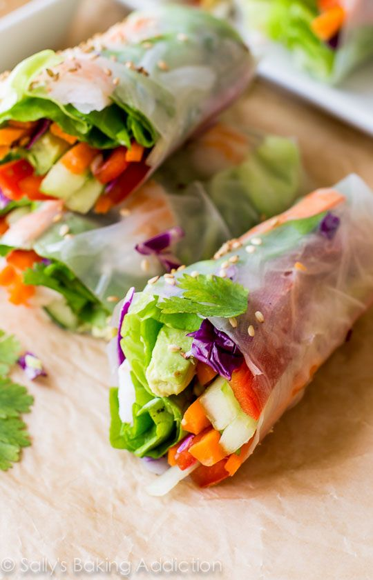

Spring Rolls
Colorful Vietnamese Spring Rolls prove that healthy food can also be satisfying and utterly delicious!
Let's cook Spring RollsNo one is born a great cook, one learns by doing.
- Julia Child
Colorful Vietnamese Spring Rolls prove that healthy food can also be satisfying and utterly delicious!
Let's cook Spring Rolls
Caramel Shrimp, which is made with fresh water prawn, fish sauce, and sugar, is one of the most delicious Vietnamese recipes.
Let's cook Caramel ShrimpFried Tofu with Scallions is a rustic Northern Vietnamese dish, featuring crispy fried tofu dipped in scallion fish sauce mixture.
Let's cook Fried Tofu